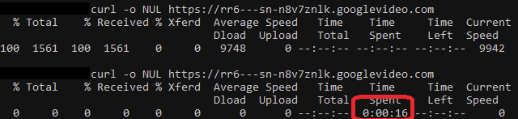
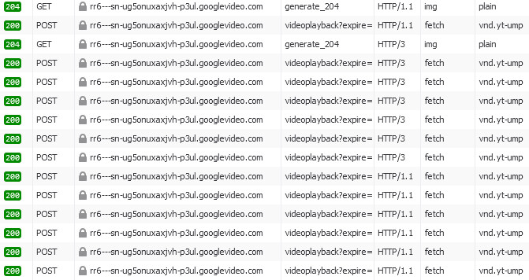
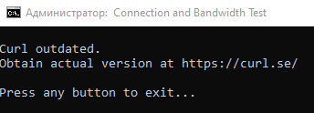
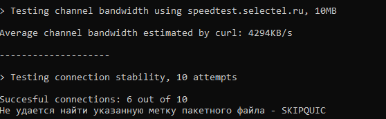
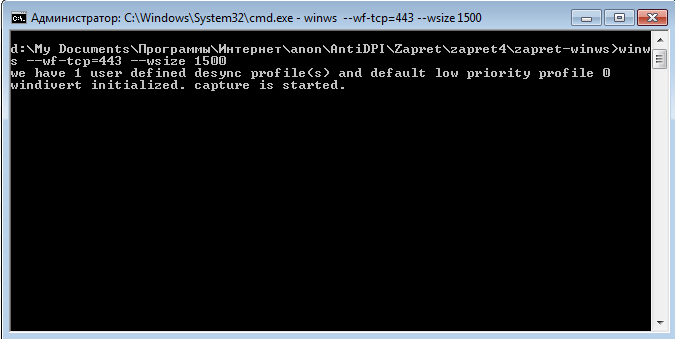
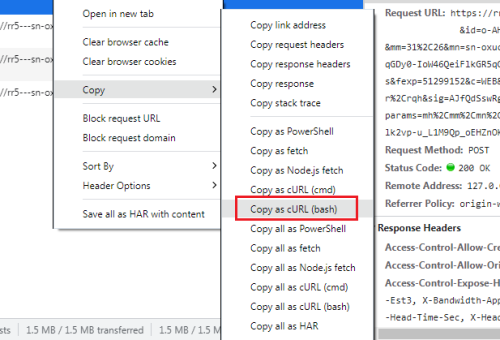

Допустим есть сервер https://rr1---sn-n8v7znsk.googlevideo.com, с которого приходит (failed) net::ERR_CONNECTION_RESET.
Как конкретно под него подобрать параметры обхода DPI?
Так: https://ntc.party/t/подбор-рабочего-конфига-для-ggc-ютуба-через-blockcheck/
Только когда
Скрипт спросит check https tls 1.3 (default : N) (Y/N) ?
нажать Y и enter
а как QUIC проверить?
Если так сделать, тогда не будет стратегий обхода http 1.1 и http 2
Почему не будет? Разве не это дополнение к tls 1.2 ?
В браузере F12 вкладка network, добавить столбик protocol. h3 в этом столбике значит quic.
Оно по умолчанию проверяется, если вы про блокчек
tls 1.3 не обратно совместима с tls 1.2 и tls 1.1.
Стратегии, совместимые с tls 1.2 будут работать на tls 1.3, но не наоборот.
Ну значит, проверить для tls 1.2, если ничего не найдется, то еще раз для tls 1.3 - так правильно ?
Имеется ввиду как проверить QUIC в blockchek т.к. по умолчанию blockcheck его не проверяет.
clearing winws redirection
- SUMMARY
ipv4 rr1---sn-ov8vuxaxjvh-v8cs.googlevideo.com curl_test_http3 : winws not working
Проверяет. У вас либо не находится стратегия обхода, либо по каким-то причинам не работает winws или windivert не стартовал. Система случайно не win7 или x32? На x32 zapret не работает из коробки, а на win7 нужно брать файлы WinDivert.dll и WinDivert64.sys из папки gdpi goodbyedpi-0.2.3rc3-2\x86_64\ причем менять в 2 местах: blockcheck\zapret\nfq\ и zapret-winws\
для tls 1.3 думаю не обязательно, достаточно tls 1.2.
Поставьте в этом вопросе Y, будет проверять quic
check https tls 1.3 (default : N) (Y/N) ?
Win 10x64
- SUMMARY
ipv4 rr1---sn-ov8vuxaxjvh-v8cs.googlevideo.com curl_test_http : working without bypass
ipv4 rr1---sn-ov8vuxaxjvh-v8cs.googlevideo.com curl_test_https_tls12 : working without bypass
ipv4 rr1---sn-ov8vuxaxjvh-v8cs.googlevideo.com curl_test_https_tls13 : working without bypass
ipv4 rr1---sn-ov8vuxaxjvh-v8cs.googlevideo.com curl_test_http3 : winws not working
Все кроме QUIC проверяет.
Ркн перестал блокировать ggc что ли ? 
Про quic же в другом месте спрашивают
check http3 QUIC (default : Y) (Y/N) ?
Вы не путаете http3 (quic) и tls 1.3 (протокол https)?
Покажите плс результат команды в командной строке sc qc WinDivert
Вообще забавно, да, у вас по идее без обхода должно работать)
[SC] QueryServiceConfig: успех
Имя_службы: WinDivert
Тип : 1 KERNEL_DRIVER
Тип_запуска : 4 DISABLED
Управление_ошибками : 1 NORMAL
Имя_двоичного_файла : ??\C:\Users\User\Downloads\zapret-win-bundle-master\blockcheck\zapret\nfq\WinDivert64.sys
Группа_запуска :
Тег : 0
Выводимое_имя : WinDivert
Зависимости :
Начальное_имя_службы :
Кстати, в gdpi можно попробовать добавить в конфиг для ютуба -p
Как вы работоспособность стратегии проверяете?
ну значит, если верить блочеку, quic у вас не работает, зато работает по https без обхода
Для quic нужен свой пэйлоад от гугла (quic initial или его кусок), по другому там не проходит. Потому и блокчек ничего не находит.
--dpi-desync=fake --dpi-desync-repeats=2 --dpi-desync-fake-quic="quic_ietf_google_com_2.bin"
quic_ietf_google_com_2.bin (1,2 КБ)
Проверять так:
curl -svo NUL --http3-only https://rr....
Может понадобиться обновленный курл. Не знаю есть ли в дефолтном виндоусовском поддержка http3.
Что-то провайдер, вернее ркн с настройками играется сильно часто, утром еще блочилось а сейчас уже нет, запущу еще раз проверку…
Благодарю!
Можете запустить _CMD_ADMIN.cmd из папки zapret-winws, вставьте туда свою стратегию, проверьте ютуб ( к стратегии можно еще добавить --dpi-desync-fake-tls=tls_clienthello_www_google_com.bin, файл tls_clienthello_www_google_com.bin должен лежать в той же папке)
Нет, не путаю.
HTTP/3, который использует транспортный протокол QUIC, работает тоже по HTTPS.
Это так себе метод. В консоли как проверить?
А причем тут quic, который по udp и tls 1.3, который по tcp?
Что-то не догоняю вопроса) Это же и есть консоль. Какую вам zapret выдал стратегию?
Проверять работоспособность в консоли как? Открывать браузер и проверять глазами так себе метод.
Так вам не ютуб нужен? А метод проверки из консоли? Ну через curl тогда видимо. Как выше написали
curl -kv -o NUL https://rrбла-бла.googlevideo.com
А для чего, если не секрет?
Ютуб нужен. Для достоверного тестирования работоспособности. Хочу скрипт написать, который будет сразу работоспособную стратегию применять.
curl -kv -o NUL https://rrбла-бла.googlevideo.com не позволяет достоверно определить работоспособность.
Значит, самое достоверное - это таки
))
А в скрипт вы можете просто вставить копирование в .cmd рабочей стратегии из лога блокчека и запуск. Или перебор стратегий, если их несколько.
С чего бы это не позволяет? Разве что -k убрать на всякий случай. Можете ещё -X POST прикрутить, если боитесь ошибок 403. Хотя смысла 0, имхо.
Попробуйте подольше потестировать, Сколько раз наблюдал, видео в браузере не грузится, запросы в network красные, а curl проходит.
Никогда с таким не сталкивался. А тестировал я очень много. Вы точно https:// не забывали указывать в курле? Единственные 2 исключения: ошибки 403 и провайдерские сервера. С 403 понятно, а с провайдерскими серверами проблема не на канале между клиентом и сервером, а между сервером и внешней сетью. Поэтому эта проблема со стороны клиента неразрешима. Только блочить такие сервера.
Конечно указывал.
Ну не знаю. Как правило ТСПУ останавливает на хэндшейке. Если он проходит, то дальше и проблем нет.
Не встречался с ситуациями чтобы в браузере не работал сервер, а в курле работал.
Разве что с самим сервером проблемы.
Один раз curl проходит, через секунду нет, просто висит и таймер тикает

Также есть сервера googlevideo, которые возвращают статус 200, но делают это с задержкой 5-10 секунд, что фактически говорит о том, что GoodbyeDPI на этот сервер не работает должным образом и блокировку не обходит.
Как такие тестировать?
А как этот пэйлоад к блокчеку прикрутить, чтобы он начал его использовать?
Подождем ответа от автора запрета Zapret: обсуждение - #886 by TesterTi
Пейлоад должен быть в формате файла .bin
Прикрутить к конфигу его можно с помощью параметра --dpi-desync-fake-tls=<filename> где указать этот самый *.bin.
Например --dpi-desync-fake-tls=tls_clienthello_gosuslugi_ru.bin
Файл класть в ту же папку, где лежит winws.exe
Если хочется длинную строку, как в GDPI то просто в эту же команду вместо имени файла вставляем строку, добавив спереди 0x
--dpi-desync-fake-tls=0x160301FFFF01FFFFFF0303594F5552204144564552544953454D454E542048455245202D202431302F6D6F000000000009000000050003000000
Тут вопрос так понимаю, был именно про блокчек, как туда добавить, т.е. при поиске стратегий.
Блин, действительно. Почему-то блокчек прочел как запрет  Там фейк есть, но из нескольких нулей
Там фейк есть, но из нескольких нулей
А вообще - в блокчеке и так есть куча фейков (целая папка blockcheck\zapret\files\fake) так что вряд ли туда что-то надо дополнительно прикручивать.
Но можно положить свой bin в эту папку и блокчек его подхватит при проверке, если я правильно понял строчку
pktws_curl_test_update_vary $1 $2 $3 $desync --dpi-desync-fake-syndata="$ZAPRET_BASE/files/fake/$s" $e && [ "$SCANLEVEL" = quick ] && return
в баше
А я так понимаю, что подхватит, только если самому вписать. Ну исходя из того, что bolvan написал. Но наберемся терпения и дождемся его уточнения)
К блокчеку - хз, автора спрашивать надо.
Я сам с таким никогда не сталкивался. Можете сказать что у вас за стратегия?
Может ли эта проблема быть следствием популяризовавшейся нынче --fake-gen 13 и выше? Возможно, с такой стратегией, тут не столько “маскировка” трафика, сколько заваливание ТСПУ потоком мусора, пока он не сглючит и не пропустит? Отсюда и нестабильность работы?
Но если у вас более “цивильная” стратегия, то хз чем это может быть вызвано.
Энивей, на почве данной проблемы, я написал батник - и для вас, и для себя, и для всех желающих. Он там ряд тестов курлом проводит, чтобы руками этим не заниматься постоянно.
Могут быть баги.
Спойлер
::by Ori
@echo off
title Connection and Bandwidth Test
for /F "tokens=1,2 delims= " %%i in ('curl -V') do (if "%%i"=="curl" set version=%%j)
for /F "tokens=1,2 delims=." %%i in ("%version%") do (set MajorVersion=%%i && set MinorVersion=%%j)
if %MajorVersion% LSS 8 (goto OUTDATED)
if %MinorVersion% LSS 10 (goto OUTDATED)
set "connect_to_url=speedtest.selectel.ru"
set volume_to_transfer=10
set attempts=10
set /A time_to_transfer=%volume_to_transfer%/2
:USERINPUT
cls
echo.
set /P url="Input URL to test: "
if not defined url (goto USERINPUT)
set "url=%url:https://=%"
set "url=%url:http://=%"
for /F "tokens=1 delims=/" %%n in ("%url%") do set url=%%n
set "url=https://%url%"
cls
echo.
echo ^> Testing connectivity with %url%
echo.
curl -sSo NUL -m 2 -w "\nRemote IP: %%{remote_ip}\nRedirect URL: %%{redirect_url}\n\nHTTP version: %%{http_version}\n\nTime - DNS Lookup:\t%%{time_namelookup}\nTime - Connection:\t%%{time_connect}\nTime - Handshake:\t%%{time_appconnect}\n\nTime - Total:\t\t%%{time_total}\n\nBytes received in header: %%{size_header}\n\n" %url%
if %ERRORLEVEL%==0 (echo Test passed) else (echo Test failed)
echo.
echo ------------------------------------------
echo.
echo ^> Testing QUIC connectivity with %url%
echo.
curl -sSo NUL -m 2 --http3-only -w "\nRemote IP: %%{remote_ip}\nRedirect URL: %%{redirect_url}\n\nHTTP version: %%{http_version}\n\nTime - DNS Lookup:\t%%{time_namelookup}\nTime - Connection:\t%%{time_connect}\nTime - Handshake:\t%%{time_appconnect}\n\nTime - Total:\t\t%%{time_total}\n\nBytes received in header: %%{size_header}\n\n" %url%
if %ERRORLEVEL%==0 (echo Test passed) else (if %ERRORLEVEL%==95 (echo Test passed) else (echo Test failed))
echo.
echo ------------------------------------------
echo.
echo ^> Testing channel bandwidth using %connect_to_url% and SNI of %url%; volume to transfer: %volume_to_transfer%MB
echo.
set speed=0
for /F %%i in ('curl -ko NUL -m %time_to_transfer% --connect-to ::%connect_to_url% %url%/%volume_to_transfer%MB -w "%%{speed_download}\n\n"') do set speed=%%i
set /A speed=%speed%/1024
echo.
echo Average channel bandwidth estimated by curl: %speed%KB/s
set speed=
echo.
echo ------------------------------------------
echo.
echo ^> Testing connection stability with %url%, %attempts% attempts
echo.
set successes=0
set counter=%attempts%
:LOOP
for /F %%g in ('curl -so NUL -m 1 %url% -w "%%{response_code}\n"') do set code=%%g
echo Response code: %code%
if not %code%==000 (set /A successes=%successes%+1)
set /A counter=%counter%-1
if not %counter%==0 (goto LOOP)
echo.
echo Succesful connections: %successes% out of %attempts%
set successes=
set counter=
echo.
echo ------------------------------------------
echo.
echo ^> Testing QUIC connection stability with %url%, %attempts% attempts
echo.
set successes=0
set counter=%attempts%
:LOOP_QUIC
for /F %%g in ('curl -so NUL --http3-only -m 1 %url% -w "%%{response_code}\n"') do set code=%%g
echo Response code: %code%
if not %code%==000 (set /A successes=%successes%+1)
set /A counter=%counter%-1
if not %counter%==0 (goto LOOP_QUIC)
echo.
echo Succesful connections: %successes% out of %attempts%
set successes=
set counter=
echo.
echo ------------------------------------------
echo.
echo ^> Testing connection stability with %url%, 10 attempts in parallel
echo.
curl -sSZm 3 --parallel-immediate --parallel-max 10 %url% %url% %url% %url% %url% %url% %url% %url% %url% %url% > NUL
echo.
if %ERRORLEVEL%==0 (echo Test passed) else (echo Test failed)
echo.
echo ------------------------------------------
echo.
echo ^> Testing QUIC connection stability with %url%, 10 attempts in parallel
echo.
curl -sSZm 3 --http3-only --parallel-immediate --parallel-max 10 %url% %url% %url% %url% %url% %url% %url% %url% %url% %url% > NUL
echo.
if %ERRORLEVEL%==0 (echo Test passed) else (if %ERRORLEVEL%==95 (echo Test passed) else (echo Test failed))
echo.
echo ------------------------------------------
echo.
set url=
choice /C YN /M "Another test?"
if %ERRORLEVEL%==1 (goto USERINPUT)
:EOF
set version=
set MajorVersion=
set MinorVersion=
set connect_to_url=
set volume_to_transfer=
set time_to_transfer=
set attempts=
exit /b
:OUTDATED
set version=
set MajorVersion=
set MinorVersion=
echo.
echo Curl outdated.
echo Obtain actual version at https://curl.se/
echo.
echo Press any button to exit...
pause>NUL
exit /b
Обновил скрипт еще раз, добавил тесты для quic + более очевидный вывод курла.
И ещё раз. Теперь ситуации когда соединение повисает после хэндшейка видны по кол-ву полученных байт.
Я тут, как мамкин ЛОХализатор, немного подсуетился ))
ConnTest.cmd (2,4 КБ)
И что-то виндовый (Windows 11) курл плохо подходит, надо кидать в папку со скачанным.
Блин, с виндоусовским я не пробовал, ща посмотрю в чем там проблема.
Не, виндоусовский это параша. Я даже не буду думать как это починить. Можно попробовать проверку версии прикрутить, но мне впадлу.
Testing QUIC connectivity with https://rr1---sn-ov8vuxaxjvh-v8cs.googlevideo.com
curl: option --http3-only: the installed libcurl version doesn't support this
Нас тут таких много наверно, кто под виндой сидит).
Как обновить встроенный в винду curl тоже не ясно
Нужно наверно отдельную тему создать для “нубских вопросов”)
Добавил проверку версии курла. В качестве минимума поставил 8.10.
Ух ты, круто!
Обновил curl, теперь заработало
> Testing QUIC connectivity with https://rr8---sn-ov8vuxaxjvh-v8ce.googlevideo.com
curl: (95) HTTP/3 stream 0 reset by server
Lookup time: 0.003132
Connect time: 0.003644
AppCon time: 0.003644
Redirect time: 0.000000
PreXfer time: 0.013022
StartXfer time: 0.014052
Total time: 0.014353
Теперь надо пэйлоад в конфиг дописать если я правильно понимаю
NFQWS_OPT_DESYNC="--dpi-desync=fake --dpi-desync-ttl=4 --dpi-desync-fake-tls=tls_clienthello_gosuslugi_ru.bin"
Эта рабочая конструкция? Путь до фейков нужно полностью прописывать или так оставить?
У вас на роутере запрет стоит что ли?
zapret на роутере, но блокчек использую из под винды
Ясно. Насколько понимаю, путь нужен полный, либо в той же папке лежать фейк.
Про фейк вам уже выше сказали, но лучше использовать фейк от гугла, а не от госуслуг.
Ещё у меня quic работает только с добавлением --dpi-desync-repeats, но у вас, видимо, и так ок.
Скрипт я там ещё немного обновил, btw. Вообще, надо туда, наверное, еще тестов квика напихать побольше, но потом уже.
А у меня quic так и продолжает отваливаться через какое-то время. Сначала всё идёт нормально, но в конечном итоге снова переходит на h/1.1, даже с вашим конфигом. Иногда просто само по себе слетает с h/3 до h/1.1, иногда после ошибки, иногда после перезагрузки страницы. Хотя видео конечно и так работают, а это самое главное.

Нашел более менее рабочий способ фильтровать неработающие сервера. Меняем в файле blockcheck.sh 2 секунды на 0.5
CURL_MAX_TIME=${CURL_MAX_TIME:-0.5}
И ставим количество тестов 5 или больше. Большинство неработающих стратегий отваливаются уже на тестировании. Плюс тестирование идет значительно быстрее.
Ну фиг знает. Попробуйте может свой собственный фейк записать, прям со своего браузера. Может лучше будет. Или наоброт мусорный мини-фейк использовать. У меня от такая хрень работала, 144 байта. С 2 повторами, или с 11.
quic_test_FF.bin (144 байта)
Я вот тут подумал, если ли способ вычислять ближайшие ggc сервера? То есть не через бровзер, а через какой-нибудь api, к примеру.
А зачем? Всё равно же нельзя ютуб заставить тащить видео с какого-то конкретного сервера, даже если его адрес знаешь. В ytdlp тоже такого функционала нет.
Просто мысль.
Я там вчера ковырял старый скрипт блокчека от Валдика, пришел к выводу, что особого смысла в нем нет, там придется половину дописывать, по сути повторять блокчек запрета. В общем, еще один велосипед. Но было бы круто прикрутить к этому велосипеду чек ближайших к пользователю ggc, чтобы уже на основе их искать стратегию. Не все могут нажать f12 и посмотреть videoplayback, тем более найти в нем нужный адрес.
А у ютуба есть открытое api и документация по нему? Или у них закрытый код? Что-то мне подсказывает, что второе…
Там есть API, но оно для юзеринтерфейсов, типа как инвидоус. Большего там не получить.
Можно вытащить идентификатор кластера из https://redirector.googlevideo.com/report_mapping?di=no скриптом, потом найти айпишники rr1.идентификатор.googlevideo.com и тестить по айпи, подсовывая SNI googlevideo.com, чтобы коробка активизировалась. Но это даст только провайдерские кэши, а не все ближайшие.
Получится что-то типа curl https://googlevideo.com --connect-to ::айпишник
А в чем разница? 
Вот это как раз то самое, что искал. Спасибо. Будем думать по поводу реализации. 
По сути, нужны как раз провайдерские кеши, потому как труба в первую очередь ломится в них. Автоматизировать перебор дальше по сети нет смысла, их тысячи, там уже вручную.
Если курлить предложенным конфигом там ошибка SEC_E_WRONG_PRINCIPAL.
А вот на хухел реагирует, возвращает 301.
На ютуб вообще не курлится.
По сути любой ответ годен, кроме 403. А вот как чекать рабочее замедление? Наверное только так
curl -k -o NUL https://qwe.googlevideo.com/10MB --connect-to ::ip
И как-то смотреть на деградацию скорости. У меня, к примеру, по нулям сходу. Курл возвращает 35.
Собственно, вот и методика.
Это хороший метод, но не универсальный. К примеру, у меня за всеми новыми видео, которых еще нет в кеше у провайдера, гугл шлет на зарубежные ip (ну или наши, на 2 разных сайтах по этим ip были разные результаты). А их этим методом не вычислишь. Без них видео не играет. И для них нужны другие настройки, не как для ggc провайдера
Короче, переделал свой скрипт для курления, чтобы он автоматом тестил провайдерские сервера. Версия очень сырая + мне не нравится как он результаты выводит. Надо все переделать. Но работать вроде работает.
Спойлер
::by Ori
chcp 1251
@echo off
title Connection and Bandwidth Test
cls
::Checking Curl version
for /F "tokens=1,2 delims= " %%i in ('curl -V') do (if "%%i"=="curl" set version=%%j)
for /F "tokens=1,2 delims=." %%i in ("%version%") do (set MajorVersion=%%i && set MinorVersion=%%j)
if %MajorVersion% LSS 8 (goto OUTDATED)
if %MinorVersion% LSS 10 (goto OUTDATED)
::Setting variables
set "connect_to_url=speedtest.selectel.ru"
set volume_to_transfer=10
set attempts=10
set /A time_to_transfer=%volume_to_transfer%/2
::Parsing claster codename
echo.
for /F "tokens=3 delims= " %%i in ('curl -sSm 2 "https://redirector.googlevideo.com/report_mapping?di=no"') do (set claster=%%i)
if not %ERRORLEVEL%==0 (echo Failed!)
echo ^> Claster codename: %claster%
::Testing loop
set ggcCounter=1
:GGCLOOP
::FAILLEVEL 0=allgreen;1=QUIC fail;2=total fail
set FAILLEVEL=0
::Forming URL
echo.
echo ------------------------------------------
echo.
set ggcURL=https://rr%ggcCounter%.%claster%.googlevideo.com
echo ^> Cache Server %ggcCounter%: %ggcURL%
set /A ggcCounter=%ggcCounter%+1
::Parsing IP address, not needed?
::for /F %%i in ('curl -sSkm 2 -o NUL -w "%%{remote_ip}" %ggcURL%') do (set ggcIP=%%i)
::echo ^> Cache Server IP: %ggcIP%
echo.
echo --------------------
echo.
echo ^> Testing connectivity...
echo.
curl -sSko NUL -m 2 -w "DNS_T: %%{time_namelookup} µs - Connection_T: %%{time_connect} µs - Handshake_T: %%{time_appconnect} µs - Total_T: %%{time_total} µs - Header: %%{size_header} bytes\n\n" %ggcURL%
if not %ERRORLEVEL%==0 (set FAILLEVEL=2)
if %FAILLEVEL%==2 ((echo Test failed) && (goto END))
echo Test passed
echo.
echo --------------------
echo.
echo ^> Testing QUIC connectivity...
echo.
curl -sSko NUL -m 2 --http3-only -w "DNS_T:%%{time_namelookup} µs - Connection_T: %%{time_connect} µs - Handshake_T: %%{time_appconnect} µs - Total_T: %%{time_total} µs - Header: %%{size_header} bytes\n\n" %ggcURL%
if %ERRORLEVEL%==0 (echo Test passed) else (if %ERRORLEVEL%==95 (echo Test passed) else ((set FAILLEVEL=1) && (echo Test failed)))
echo.
echo --------------------
echo.
echo ^> Testing channel bandwidth using %connect_to_url%, %volume_to_transfer%MB
echo.
set speed=0
for /F %%i in ('curl -sko NUL -m %time_to_transfer% --connect-to ::%connect_to_url% %ggcURL%/%volume_to_transfer%MB -w "%%{speed_download}"') do set speed=%%i
set /A speed=%speed%/1024
echo Average channel bandwidth estimated by curl: %speed%KB/s
set speed=
echo.
echo --------------------
echo.
echo ^> Testing connection stability, %attempts% attempts
echo.
set successes=0
set counter=%attempts%
:LOOP
for /F %%g in ('curl -sko NUL -m 1 %ggcURL% -w "%%{response_code}"') do set code=%%g
::echo Response code: %code%
if not %code%==000 (set /A successes=%successes%+1)
set /A counter=%counter%-1
if not %counter%==0 (goto LOOP)
echo Succesful connections: %successes% out of %attempts%
set successes=
set counter=
if %FAILLEVEL%==1 (goto SKIPQUIC)
echo.
echo --------------------
echo.
echo ^> Testing QUIC connection stability, %attempts% attempts
echo.
set successes=0
set counter=%attempts%
:LOOP_QUIC
for /F %%g in ('curl -sko NUL --http3-only -m 1 %ggcURL% -w "%%{response_code}"') do set code=%%g
::echo Response code: %code%
if not %code%==000 (set /A successes=%successes%+1)
set /A counter=%counter%-1
if not %counter%==0 (goto LOOP_QUIC)
echo Succesful connections: %successes% out of %attempts%
set successes=
set counter=
:SKIPQUIC1
echo.
echo --------------------
echo.
echo ^> Testing connection stability, 10 attempts in parallel
echo.
curl -skZm 3 --parallel-immediate --parallel-max 10 %ggcURL% %ggcURL% %ggcURL% %ggcURL% %ggcURL% %ggcURL% %ggcURL% %ggcURL% %ggcURL% %ggcURL% > NUL
if %ERRORLEVEL%==0 (echo Test passed) else (echo Test failed)
if %FAILLEVEL%==1 (goto END)
echo.
echo --------------------
echo.
echo ^> Testing QUIC connection stability, 10 attempts in parallel
echo.
curl -skZm 3 --http3-only --parallel-immediate --parallel-max 10 %ggcURL% %ggcURL% %ggcURL% %ggcURL% %ggcURL% %ggcURL% %ggcURL% %ggcURL% %ggcURL% %ggcURL% > NUL
if %ERRORLEVEL%==0 (echo Test passed) else (if %ERRORLEVEL%==95 (echo Test passed) else (echo Test failed))
:END
echo.
echo --------------------
echo.
pause
goto GGCLOOP
:EOF
set version=
set MajorVersion=
set MinorVersion=
set connect_to_url=
set volume_to_transfer=
set time_to_transfer=
set attempts=
exit /b
:OUTDATED
set version=
set MajorVersion=
set MinorVersion=
echo.
echo Curl outdated.
echo Obtain actual version at https://curl.se/
echo.
echo Press any button to exit...
pause>NUL
exit /b
Скрипт надежный как швейцарские часы 

Чисто для шарящих. Простой юзер пройдет мимо. 
Не ну а че, в виндоусовской версии даже http3 нет.
Ну вот и я о том же.
Блин, там еще и кодировка поехала я смотрю. Не надо было букву мю для микросекунд вставлять.
Да вообще скрипт не отлажен.

Ну я и говорю сырой.
Сейчас выяснил интересную штуку. Если парсить блокчеком адрес rr1.имяпула.googlevideo.com, то методов обхода не будет. А вот если rr1.кодированнаябелиберда.googlevideo.com, тогда стратегия найдется. В общем, эти домены походу настроены на разные протоколы, пока не проверял.
Так что способ с получением зоны всё же не работает.
Когда-то давно я встречал где-то объяснение, как декодировать пул, а вот где - уже не помню.
ЗЫ. Вспомнил. И нашел.
Алгоритм моноалфавитной перестановки.
0123456789abcdefghijklmnopqrstuvwxyz - берем позицию
uzpkfa50vqlgb61wrmhc72xsnid83ytoje94 - берем значение на позиции из верхней строки
В обе стороны работает. Поэтому после получения из репорт-маппинга нужно преобразовать строку. То бишь у нас ссылки вида rr1.—sn-пул.googlevideo.com
Подробно у французов.
Ничего себе, круть!
У кого-нибудь получилось с помощью dpi вернуть работоспособность ютубу полностью, т.е. чтобы работал как обычно без малейших подтормазиваний при загрузке видео и перемотке? Напишите с какими настройками если такое получилось.
У каждого провайдера свои настройки. Подбери алгоритм блокчеком и переведи настройки в gdpi. Там вряд ли получится полноценный аналог, но будет база от которой можно подбирать дальше.
Подбирать, конечно, можно. Так у вас получилось полностью восстановить работоспособность до того уровня, что был раньше? Или сейчас работает, но хуже?
Ну вот сегодня снова кинул чек, поменял стратегию, работает быстрее, чем до блокировки 
Хотя я gdpi давно не пользуюсь, у меня zapret. Но настройки в моем случае имеют полноценные аналоги и в gdpi, и в byedpi - на смартфоне.
Какие у вас настройки, можете показать?
Cейчас у меня -e 2 --native-frag --fake-gen 1
А в запрете это как выглядит у вас?
Блин, дожили. Кидаешь настройки GDPI - просят запрет. Кидаешь запрет - просят GDPI 
Как-то так, наверное --dpi-desync=split2 --dpi-desync-fake-tls="%~dp0tls_clienthello_www_google_com.bin"
Просто хочется подобрать такие настройки, которые не придется завтра переделывать.
А если fake-gen убрать?
Придется.
РКН постоянно что-то крутят. Настройки могут слететь в любой момент, через минуту или через месяц, не угадать.
Вот например у меня сейчас походу начали замедлять сам сайт ютуба. Потому что на приложухе в смарте летает будто бы я в офисе гугла сижу. А на десктопе едва загружается. Зато если прогрузит, то видео работает отлично.
ЗЫ. Так и есть, сайт ютуба теперь висит на сплите. При чем вообще пофиг, что на h2, что на h3.
Что-то у меня совсем перестал работать блокчек. Только http есть даже в режиме force.
ipv4 rr8---sn-n8v7kn7s.googlevideo.com curl_test_http : working without bypass
ipv4 rr8---sn-n8v7kn7s.googlevideo.com curl_test_http : winws --wf-l3=ipv4 --wf-tcp=80 --hostcase
ipv4 rr8---sn-n8v7kn7s.googlevideo.com curl_test_https_tls12 : winws not working
ipv4 rr8---sn-n8v7kn7s.googlevideo.com curl_test_http3 : winws not working
Сервак, наверное, охренел, от дрочки и по http и по https и по квику ) Зачем это все? Нужно только HTTPS TLS 1.3 и квик. Все.
Может, попробовать по совету автора запрета ?
Кстати, стратегию можно искать блокчеком на каком-нибудь домене GGC, который не загружается через curl без обхода блокировок. При этом параллельно надо запустить
winws --wf-tcp=443 --wsize 1500.
Там у всех Connection timed out
На любом сервере? Или все на одном?
Если там у всех - то или рабочих стратегий нет (заблочили покруче) или может виндиверт устал или еще чего… Может комп перезагрузить?
Понимаю, что последний совет типа “выйти и зайти”, но все же
Я так и делаю, результат тут
Зачем параллельно запускать?
Еще пару дней назад работало, а сейчас что-то поломалось. Уже и curl обновил до 8.10.1. И запрет заново с гитхаба скачал. Думаю что-то с виндивертом случилось.
Нужно всё.
Вот у меня, например, работает только tls2. Прямо вот с сейчас 
Tls3 видится, чекается, но не работает.
Снова что-то подкрутили. Теперь у меня сайт ютуба уехал в блокировку к остальным.
Что-то я совсем запутался как правильно блокчек запускать?
https://ntc.party/t/%D0%BF%D0%BE%D0%B4%D0%B1%D0%BE%D1%80-%D1%80%D0%B0%D0%B1%D0%BE%D1%87%D0%B5%D0%B3%D0%BE-%D0%BA%D0%BE%D0%BD%D1%84%D0%B8%D0%B3%D0%B0-%D0%B4%D0%BB%D1%8F-ggc-%D1%8E%D1%82%D1%83%D0%B1%D0%B0-%D1%87%D0%B5%D1%80%D0%B5%D0%B7-blockcheck
Я делаю так) Но вот bolvan писал, что некоторые провайдеры желая починить ютуб, меняют wsize . Можно проверить, все равно вам терять нечего)
У меня на всем кроме http выдает winws not working. Как это исправить?
Вы как это исправили?
sc qc WinDivert
[SC] QueryServiceConfig SUCCESS
SERVICE_NAME: WinDivert
TYPE : 1 KERNEL_DRIVER
START_TYPE : 4 DISABLED
ERROR_CONTROL : 1 NORMAL
BINARY_PATH_NAME : \??\C:\Users\aajr\Downloads\zapret-win-bundle-master\blockcheck\zapret\nfq\WinDivert64.sys
LOAD_ORDER_GROUP :
TAG : 0
DISPLAY_NAME : WinDivert
DEPENDENCIES :
SERVICE_START_NAME :
С winws --wf-tcp=443 --wsize 1500 блокчек выдает то же самое?
Может я как-то его не правильно запускаю. Вы как эту строчку запускаете?
Вторым экземпляром.
То бишь сначала отдельно winws.exe --wf-tcp=443 --wsize 1500
Потом блокчек.
Через _CMD_ADMIN.cmd можно

Исправляется это просто - sc delete windivert
У вас служба задисейблилась почему-то
А она при остановке должна вообще удаляться
Да в общем то ни как не исправил. Вставил правила от youtube.com, на веру так сказать 
–dpi-desync=fake --dpi-desync-repeats=x
* SUMMARY
ipv4 rr5---sn-ov8vuxaxjvh-v8ce.googlevideo.com curl_test_https_tls12 : working without bypass
ipv4 rr5---sn-ov8vuxaxjvh-v8ce.googlevideo.com curl_test_https_tls13 : working without bypass
ipv4 rr5---sn-ov8vuxaxjvh-v8ce.googlevideo.com curl_test_http3 : winws not working
Интереснее что сейчас blockcheck вобще пишет что googlevideo работает без обхода, но если убрать googlevideo из хост листа то через какое то время появляются подвисания.
Может там правила уже автоматически по таймеру меняются 
Буду дальше наблюдать.
У меня это было так: Сначала стало грузится все, даже убитые 100 лет назад аватарки, причем безо всяких расширений по их возвращению. Не грузилось только видео. Потом заработало и оно. А так как я никогда модсет -9 и -q не использовал и QUIC в браузере не отрубал, внезапно я обнаружил, что пол-интерфейса и видео у меня работают по QUIC. Вернулся старый ютуб, так сказать. Блэклист ютуба я вообще убрал. С тех пор так и работает, уже больше недели. Может и у вас что-то подобное началось?
Мама, я сделяль~
Выкладываю файлом, а не текстом, иначе поедут кодировки.
Работает 3 способами.
- Запускаем, нажимаем enter - проверяется провайдер.
- Запускаем, вводим ссылку на гуглвидео (типа такого
https://rr2---sn-gvnuxaxjvh-o8ge.googlevideo.com), проверяется соответствующий ggc. - Вызываем из командной строки с аргументом
GGCtest https://rr2---sn-gvnuxaxjvh-o8ge.googlevideo.com- работает аналогично номеру 2.
Нужен обновленный курл, естественно.
Если кто увидит баги - плиз, пишите.
GGCtest.bat (7,3 КБ)
Читал выше, что я писал?
Респонз от серваков с именем пула отличается от респонза с кодированным именем, как в запросах. В результате ты проверяешь то, что не работает в браузере, то есть смысла в этом нет. Нужно форматировать название и потом уже курлить.
Читал. Я вообще искал инфу о том как мне превратить свой skynet-led2 в sn-n3toxu-axql, но ниче так и не вышло.
А айпи энивей одинаковый.
В курле он ругается на SSL сертификат, если не поставить флаг -k. Пробовал в блокчеке без проверки сертификатов прогонять? Мне кажется проблема в этом.
Мне вообще сложно тестить самому, т.к. у меня провайдерские ggc до ТСПУ стоят.
Добавил уборку мусора, чтобы переменными не засирать среду
GGCtest.bat (7,6 КБ)
Я же написал как.
- Создаешь три массива, в первый засовываешь первую строку, разбив её по одному символу. Во второй массив - вторую строку. Получилось два массива по 36 символов. И третий - пустой.
- Вычисляешь длину skynet-led2.
- Циклом перебираешь по количеству символов. Берешь первый символ из skynet-led2, находишь его позицию в первом массиве, и берешь значение из этой же позиции во втором.
- Записываешь в третий массив приращением.
- Конкатенируешь третий массив в строку.
- Профит.
Это можно сделать даже в батнике.
Это конечно супер здорово, но нафига? Айпи тот же, SNI googlevideo.com в запросе есть. Условия для активации коробки соблюдены.
А то что там какая-то ошибка сертификата, да и пофиг на нее.
Апдейт, выкинул тесты через selectel, кроме одного. Энивей коннект идет к нему, а не к целевым серверам.
GGCtest.bat (7,7 КБ)
Да вот не пофиг. Я же написал, для чего. Блокчек запрета выдает полное отсутствие стратегий, если указан такой адрес. Юпуп обращается через доменное имя, а не по адресу. Я более чем уверен, что видеоплейбек выдаст ошибку, если ему подсунуть адрес. И скорее всего у пакетов разные хедеры.
К слову, на одном IP можно развернуть хоть миллион разных доменов  И это не значит, что все они выдают одинаковый ответ.
И это не значит, что все они выдают одинаковый ответ.
А я тебе написал что проблема блокчека вызвана сертификатом.
Какая разница куда обращается ютуп? Понятное дело что rr1.skynet-led2 не заменит rr1---sn-n3toxu в случае запроса на ютубе. Но мы не ютуб тестим а останавливающую силу коробки РКНа. Там поверяют айпи, SNI, иногда serverhello. Но гуглвидео на tls 1.3, ответ зашифрован, можно забить. Значит нам важны только целевой айпи и SNI. Айпи тот же, SNI мы подсовываем.
А то что на одном айпи много доменов, это очевидно. Поэтому фейки от google.com и проходят при доступе к ютубу.
Меняются правила блокировок на ТСПУ, или перекидывает на другие маршруты, неясно.
Вот лог результатов за несколько дней:
Summary
-
SUMMARY 25.09.2024 3:30
ipv4 youtube.com curl_test_http : working without bypass
ipv4 youtube.com curl_test_https_tls12 : winws --wf-l3=ipv4 --wf-tcp=443 --dpi-desync=fake --dpi-desync-ttl=9
ipv4 youtube.com curl_test_https_tls13 : winws --wf-l3=ipv4 --wf-tcp=443 --dpi-desync=disorder2
ipv4 youtu.be curl_test_http : working without bypass
ipv4 youtu.be curl_test_https_tls12 : winws --wf-l3=ipv4 --wf-tcp=443 --dpi-desync=fake --dpi-desync-ttl=4
ipv4 youtu.be curl_test_https_tls13 : winws --wf-l3=ipv4 --wf-tcp=443 --dpi-desync=disorder2
ipv4 yt3.ggpht.com curl_test_http : winws not working
ipv4 yt3.ggpht.com curl_test_https_tls12 : winws --wf-l3=ipv4 --wf-tcp=443 --dpi-desync=fake --dpi-desync-ttl=4
ipv4 yt3.ggpht.com curl_test_https_tls13 : winws --wf-l3=ipv4 --wf-tcp=443 --dpi-desync=disorder2
ipv4 i.ytimg.com curl_test_http : working without bypass
ipv4 i.ytimg.com curl_test_https_tls12 : winws --wf-l3=ipv4 --wf-tcp=443 --dpi-desync=disorder2
ipv4 i.ytimg.com curl_test_https_tls13 : winws --wf-l3=ipv4 --wf-tcp=443 --dpi-desync=disorder2
ipv4 rr5---sn-ov8vuxaxjvh-v8ce.googlevideo.com curl_test_http : working without bypass
ipv4 rr5---sn-ov8vuxaxjvh-v8ce.googlevideo.com curl_test_https_tls12 : working without bypass
ipv4 rr5---sn-ov8vuxaxjvh-v8ce.googlevideo.com curl_test_https_tls13 : working without bypass
ipv4 play.google.com curl_test_http : working without bypass
ipv4 play.google.com curl_test_https_tls12 : winws --wf-l3=ipv4 --wf-tcp=443 --dpi-desync=fake --dpi-desync-ttl=4
ipv4 play.google.com curl_test_https_tls13 : winws --wf-l3=ipv4 --wf-tcp=443 --dpi-desync=disorder2
ipv4 ntc.party curl_test_http : winws --wf-l3=ipv4 --wf-tcp=80 --dpi-desync=fake --dpi-desync-ttl=8
ipv4 ntc.party curl_test_https_tls12 : winws --wf-l3=ipv4 --wf-tcp=443 --dpi-desync=fake --dpi-desync-ttl=8
ipv4 ntc.party curl_test_https_tls13 : winws --wf-l3=ipv4 --wf-tcp=443 --dpi-desync=disorder2 -
SUMMARY 24.09.2024 20:00
ipv4 youtube.com curl_test_http : working without bypass
ipv4 youtube.com curl_test_https_tls12 : winws --wf-l3=ipv4 --wf-tcp=443 --dpi-desync=fake --dpi-desync-ttl=4
ipv4 youtube.com curl_test_https_tls13 : winws --wf-l3=ipv4 --wf-tcp=443 --dpi-desync=disorder2
ipv4 youtube.com curl_test_http3 : winws --wf-l3=ipv4 --wf-udp=443 --dpi-desync=fake --dpi-desync-repeats=5
ipv4 youtu.be curl_test_http : working without bypass
ipv4 youtu.be curl_test_https_tls12 : winws --wf-l3=ipv4 --wf-tcp=443 --dpi-desync=fake --dpi-desync-ttl=11
ipv4 youtu.be curl_test_https_tls13 : winws --wf-l3=ipv4 --wf-tcp=443 --dpi-desync=disorder2
ipv4 youtu.be curl_test_http3 : winws --wf-l3=ipv4 --wf-udp=443 --dpi-desync=fake --dpi-desync-repeats=5
ipv4 yt3.ggpht.com curl_test_http : winws not working
ipv4 yt3.ggpht.com curl_test_https_tls12 : winws --wf-l3=ipv4 --wf-tcp=443 --dpi-desync=fake --dpi-desync-ttl=9
ipv4 yt3.ggpht.com curl_test_https_tls13 : winws --wf-l3=ipv4 --wf-tcp=443 --dpi-desync=disorder2
ipv4 yt3.ggpht.com curl_test_http3 : winws --wf-l3=ipv4 --wf-udp=443 --dpi-desync=fake --dpi-desync-repeats=5
ipv4 i.ytimg.com curl_test_http : working without bypass
ipv4 i.ytimg.com curl_test_https_tls12 : winws --wf-l3=ipv4 --wf-tcp=443 --dpi-desync=disorder2
ipv4 i.ytimg.com curl_test_https_tls13 : winws --wf-l3=ipv4 --wf-tcp=443 --dpi-desync=disorder2
ipv4 i.ytimg.com curl_test_http3 : winws --wf-l3=ipv4 --wf-udp=443 --dpi-desync=fake --dpi-desync-repeats=5
ipv4 rr5---sn-ov8vuxaxjvh-v8ce.googlevideo.com curl_test_http : working without bypass
ipv4 rr5---sn-ov8vuxaxjvh-v8ce.googlevideo.com curl_test_https_tls12 : working without bypass
ipv4 rr5---sn-ov8vuxaxjvh-v8ce.googlevideo.com curl_test_https_tls13 : working without bypass
ipv4 rr5---sn-ov8vuxaxjvh-v8ce.googlevideo.com curl_test_http3 : winws not working
ipv4 ntc.party curl_test_http : winws --wf-l3=ipv4 --wf-tcp=80 --dpi-desync=fake --dpi-desync-ttl=4
ipv4 ntc.party curl_test_https_tls12 : winws --wf-l3=ipv4 --wf-tcp=443 --dpi-desync=fake --dpi-desync-ttl=4
ipv4 ntc.party curl_test_https_tls13 : winws --wf-l3=ipv4 --wf-tcp=443 --dpi-desync=disorder2 --dpi-desync-split-pos=1
ipv4 ntc.party curl_test_http3 : winws not working -
SUMMARY 24.09.2024 16:00
ipv4 ntc.party curl_test_http : nfqws --dpi-desync=fake --dpi-desync-ttl=4
ipv4 ntc.party curl_test_https_tls12 : nfqws --dpi-desync=fake --dpi-desync-ttl=4
ipv4 youtube.com curl_test_http : working without bypass
ipv4 youtube.com curl_test_https_tls12 : nfqws --dpi-desync=fake --dpi-desync-ttl=4
ipv4 rr5---sn-ov8vuxaxjvh-v8ce.googlevideo.com curl_test_http : working without bypass
ipv4 rr5---sn-ov8vuxaxjvh-v8ce.googlevideo.com curl_test_https_tls12 : working without bypass
ipv4 i.ytimg.com curl_test_http : working without bypass
ipv4 i.ytimg.com curl_test_https_tls12 : nfqws --dpi-desync=disorder2
ipv4 yt3.ggpht.com curl_test_http : nfqws not working
ipv4 yt3.ggpht.com curl_test_https_tls12 : nfqws --dpi-desync=fake --dpi-desync-ttl=3 -
SUMMARY 23.09.2024
ipv4 youtube.com curl_test_https_tls12 : winws --wf-l3=ipv4 --wf-tcp=443 --dpi-desync=fake --dpi-desync-ttl=4
ipv4 youtube.com curl_test_https_tls13 : winws --wf-l3=ipv4 --wf-tcp=443 --dpi-desync=disorder2
ipv4 youtu.be curl_test_https_tls12 : winws --wf-l3=ipv4 --wf-tcp=443 --dpi-desync=fake --dpi-desync-ttl=4
ipv4 youtu.be curl_test_https_tls13 : winws --wf-l3=ipv4 --wf-tcp=443 --dpi-desync=disorder2
ipv4 i.ytimg.com curl_test_https_tls12 : winws --wf-l3=ipv4 --wf-tcp=443 --dpi-desync=disorder2
ipv4 i.ytimg.com curl_test_https_tls13 : winws --wf-l3=ipv4 --wf-tcp=443 --dpi-desync=disorder2
ipv4 yt3.ggpht.com curl_test_https_tls12 : winws --wf-l3=ipv4 --wf-tcp=443 --dpi-desync=fake --dpi-desync-ttl=9
ipv4 yt3.ggpht.com curl_test_https_tls13 : winws --wf-l3=ipv4 --wf-tcp=443 --dpi-desync=disorder2
ipv4 play.google.com curl_test_https_tls12 : winws --wf-l3=ipv4 --wf-tcp=443 --dpi-desync=fake --dpi-desync-ttl=4
ipv4 play.google.com curl_test_https_tls13 : winws --wf-l3=ipv4 --wf-tcp=443 --dpi-desync=disorder2
ipv4 rr9---sn-axq7sn7s.googlevideo.com curl_test_https_tls12 : winws --wf-l3=ipv4 --wf-tcp=443 --dpi-desync=split --dpi-desync-ttl=4
ipv4 rr9---sn-axq7sn7s.googlevideo.com curl_test_https_tls13 : winws --wf-l3=ipv4 --wf-tcp=443 --dpi-desync=split --dpi-desync-ttl=4 -
SUMMARY 22.09.2024
ipv4 youtube.com curl_test_https_tls12 : winws --wf-l3=ipv4 --wf-tcp=443 --dpi-desync=fake --dpi-desync-ttl=11
ipv4 youtube.com curl_test_https_tls13 : winws --wf-l3=ipv4 --wf-tcp=443 --dpi-desync=disorder2
ipv4 youtube.com curl_test_http3 : winws --wf-l3=ipv4 --wf-udp=443 --dpi-desync=fake --dpi-desync-repeats=5
ipv4 youtu.be curl_test_https_tls12 : winws --wf-l3=ipv4 --wf-tcp=443 --dpi-desync=fake --dpi-desync-ttl=4
ipv4 youtu.be curl_test_https_tls13 : winws --wf-l3=ipv4 --wf-tcp=443 --dpi-desync=disorder2
ipv4 youtu.be curl_test_http3 : winws --wf-l3=ipv4 --wf-udp=443 --dpi-desync=fake --dpi-desync-repeats=5
ipv4 i.ytimg.com curl_test_https_tls12 : winws --wf-l3=ipv4 --wf-tcp=443 --dpi-desync=disorder2
ipv4 i.ytimg.com curl_test_https_tls13 : winws --wf-l3=ipv4 --wf-tcp=443 --dpi-desync=disorder2
ipv4 i.ytimg.com curl_test_http3 : winws --wf-l3=ipv4 --wf-udp=443 --dpi-desync=fake --dpi-desync-repeats=5
ipv4 yt3.ggpht.com curl_test_https_tls12 : winws --wf-l3=ipv4 --wf-tcp=443 --dpi-desync=fake --dpi-desync-ttl=4
ipv4 yt3.ggpht.com curl_test_https_tls13 : winws --wf-l3=ipv4 --wf-tcp=443 --dpi-desync=disorder2
ipv4 yt3.ggpht.com curl_test_http3 : winws --wf-l3=ipv4 --wf-udp=443 --dpi-desync=fake --dpi-desync-repeats=5
ipv4 play.google.com curl_test_https_tls12 : winws --wf-l3=ipv4 --wf-tcp=443 --dpi-desync=fake --dpi-desync-ttl=4
ipv4 play.google.com curl_test_https_tls13 : winws --wf-l3=ipv4 --wf-tcp=443 --dpi-desync=disorder2
ipv4 play.google.com curl_test_http3 : winws --wf-l3=ipv4 --wf-udp=443 --dpi-desync=fake --dpi-desync-repeats=10
ipv4 rr9---sn-axq7sn7s.googlevideo.com curl_test_https_tls12 : winws --wf-l3=ipv4 --wf-tcp=443 --dpi-desync=split --dpi-desync-fooling=badseq
ipv4 rr9---sn-axq7sn7s.googlevideo.com curl_test_https_tls13 : winws --wf-l3=ipv4 --wf-tcp=443 --dpi-desync=split --dpi-desync-fooling=badseq
ipv4 rr9---sn-axq7sn7s.googlevideo.com curl_test_http3 : winws not working
ipv4 ntc.party curl_test_https_tls12 : winws --wf-l3=ipv4 --wf-tcp=443 --dpi-desync=fake --dpi-desync-ttl=4
ipv4 ntc.party curl_test_https_tls13 : winws --wf-l3=ipv4 --wf-tcp=443 --dpi-desync=disorder2
Еще было бы удобно если бы скрипт в имени лог файла писал время завершения проверки вида blockcheck-14:30-25.09.2004.log
Ну и в целом наверно нужно чтобы скрипт постоянно крутился на роутере или ПК и периодически проверял прописанные правила, и когда какое либо из правил переставало действовать - запускалась новая проверка по этому хосту, и после нахождения новой стратегии автоматически нерабочее правило менялось на новое и zapret продолжал работу.
Я это так вижу, а так выходит нужно по несколько раз в день запускать проверки и переписывать правила. А если таких роутеров будет несколько то вообще труба 
Надо наверно в теме zapret это писать было 
Нет, не факт. Там кроссдомены. То есть один сертификат на целый ворох инстансов. Кстати, таким образом можно делегировать разные зоны. Смысла создавать отдельный сертификат чисто для хухелвидева нет. В этом нам повезло.
Ну раз реально пофиг на адрес, тогда ладно.
При небезопасном запросе, ответ от https://rr1---sn-n3toxu-axql.googlevideo.com и от https://rr1.skynet-led2.googlevideo.com идентичный, включая хедеры.
Спойлер
C:\Users\1>curl -iks https://rr1.skynet-led2.googlevideo.com
HTTP/1.1 404 Not Found
Date: Tue, 24 Sep 2024 21:03:43 GMT
Content-Type: text/html; charset=UTF-8
Server: gvs 1.0
Content-Length: 1561
X-XSS-Protection: 0
X-Frame-Options: SAMEORIGIN
<!DOCTYPE html>
<html lang=en>
<meta charset=utf-8>
<meta name=viewport content="initial-scale=1, minimum-scale=1, width=device-width">
<title>Error 404 (Not Found)!!1</title>
<style>
*{margin:0;padding:0}html,code{font:15px/22px arial,sans-serif}html{background:#fff;color:#222;padding:15px}body{margin:7% auto 0;max-width:390px;min-height:180px;padding:30px 0 15px}* > body{background:url(//www.google.com/images/errors/robot.png) 100% 5px no-repeat;padding-right:205px}p{margin:11px 0 22px;overflow:hidden}ins{color:#777;text-decoration:none}a img{border:0}@media screen and (max-width:772px){body{background:none;margin-top:0;max-width:none;padding-right:0}}#logo{background:url(//www.google.com/images/branding/googlelogo/1x/googlelogo_color_150x54dp.png) no-repeat;margin-left:-5px}@media only screen and (min-resolution:192dpi){#logo{background:url(//www.google.com/images/branding/googlelogo/2x/googlelogo_color_150x54dp.png) no-repeat 0% 0%/100% 100%;-moz-border-image:url(//www.google.com/images/branding/googlelogo/2x/googlelogo_color_150x54dp.png) 0}}@media only screen and (-webkit-min-device-pixel-ratio:2){#logo{background:url(//www.google.com/images/branding/googlelogo/2x/googlelogo_color_150x54dp.png) no-repeat;-webkit-background-size:100% 100%}}#logo{display:inline-block;height:54px;width:150px}
</style>
<a href=//www.google.com/><span id=logo aria-label=Google></span></a>
<p><b>404.</b> <ins>That’s an error.</ins>
<p>The requested URL <code>/</code> was not found on this server. <ins>That’s all we know.</ins>
C:\Users\1>curl -iks https://rr1---sn-n3toxu-axql.googlevideo.com
HTTP/1.1 404 Not Found
Date: Tue, 24 Sep 2024 21:04:02 GMT
Content-Type: text/html; charset=UTF-8
Server: gvs 1.0
Content-Length: 1561
X-XSS-Protection: 0
X-Frame-Options: SAMEORIGIN
<!DOCTYPE html>
<html lang=en>
<meta charset=utf-8>
<meta name=viewport content="initial-scale=1, minimum-scale=1, width=device-width">
<title>Error 404 (Not Found)!!1</title>
<style>
*{margin:0;padding:0}html,code{font:15px/22px arial,sans-serif}html{background:#fff;color:#222;padding:15px}body{margin:7% auto 0;max-width:390px;min-height:180px;padding:30px 0 15px}* > body{background:url(//www.google.com/images/errors/robot.png) 100% 5px no-repeat;padding-right:205px}p{margin:11px 0 22px;overflow:hidden}ins{color:#777;text-decoration:none}a img{border:0}@media screen and (max-width:772px){body{background:none;margin-top:0;max-width:none;padding-right:0}}#logo{background:url(//www.google.com/images/branding/googlelogo/1x/googlelogo_color_150x54dp.png) no-repeat;margin-left:-5px}@media only screen and (min-resolution:192dpi){#logo{background:url(//www.google.com/images/branding/googlelogo/2x/googlelogo_color_150x54dp.png) no-repeat 0% 0%/100% 100%;-moz-border-image:url(//www.google.com/images/branding/googlelogo/2x/googlelogo_color_150x54dp.png) 0}}@media only screen and (-webkit-min-device-pixel-ratio:2){#logo{background:url(//www.google.com/images/branding/googlelogo/2x/googlelogo_color_150x54dp.png) no-repeat;-webkit-background-size:100% 100%}}#logo{display:inline-block;height:54px;width:150px}
</style>
<a href=//www.google.com/><span id=logo aria-label=Google></span></a>
<p><b>404.</b> <ins>That’s an error.</ins>
<p>The requested URL <code>/</code> was not found on this server. <ins>That’s all we know.</ins>
Вся проблема в том, что не проходит чек сертификата из-за лишнего поддомена. Собственно, как я и сказал с самого начала.
Спойлер
Server certificate:
* subject: CN=*.googlevideo.com
* start date: Aug 27 14:31:19 2024 GMT
* expire date: Nov 5 14:31:18 2024 GMT
* subjectAltName does not match hostname rr1.skynet-led2.googlevideo.com
PS: Конвертация действительно работает. Но я не вижу смысла писать скрипт. Но может быть напишу.
sc delete windivert
[SC] DeleteService FAILED 1072:
The specified service has been marked for deletion.
А удалить-то как?
Команда от админа ведь запускается? И windivert не используется запретом, gdpi , не установлен как служба?
Все верно.
sc delete windivert
из коммандной строки, запущенной от админа.
Службы не устанавливал, пока не нашел надежные настройки. Ни запрет, ни gdpi не запущены.
Попробуйте сначала sc stop windivert, а потом уже sc delete windivert
Походу, перезагрузка нужна
Ок, я добавил эту хрень, хоть и считаю это бесполезным.
GGCtest.cmd (9,8 КБ)
Крч, я беру свои слова назад, на тему полезности. Нашлось интересное применение. Но не то, о котором я думал.
Дело в том, что когда с ВПНом заходишь на https://redirector.googlevideo.com/report_mapping?di=no, там пишет всякую дичь. И я хотел добавить в скрипт проверку, чтобы ловить ошибку в такой ситуации. Запустил скрипт, а он оказывается и так работает, лол… Не ожидал что он эту тарабарщину схавает.
upd: Запихнул переменную для прокси в конфиг, чтобы тестировать хорватские ноды :О
btw они ничё такие, работают
Всё-таки я был прав, конвертировать не бесполезно.
Я привык приводить данные к оригинальным, даже если в последствии они не используются. Это позволяет избежать вот таких внезапных приколов. Но по сути да, доменное имя напрямую нигде не используется.
Добавил отображение среднего времени в последних тестах.
Сраный батник даже не поддерживает числа с плавающей точкой. Такие костыли нелепые приходится городить чтобы это работало. Зачем я за это взялся я хз.
GGCtest.cmd (10,7 КБ)
Через powershell костыль можно сделать. Или хранить флоат в строковой переменной, так делали лет 20 назад, когда повершела не существовало.
А теперь задачка потруднее.
Вот у меня вчера закрыли даже сам сайт трубы. Соответственно, получить адреса я никак не могу. И я подтверждаю, что redirector.googlevideo недоступен, из за блока самого домена.
Где брать адреса?
Я вот думаю, может пора начать собирать базу адресов? 
ЗЫ. Запрет стал выдавать неправильные стратегии в заключении. То бишь они проходят проверку, но по факту нифига не работают. Вот мне на сайт выдало split2, а по факту должно fake.
Что-то новенькое.
Да-да, та же фигня. Сижу репу чешу, что это такое
В общем, есть мысль.
Про ютуб.
Некоторые домены со скриптами теперь имеют другие стратегии.
Пока не разобрался, какие именно, но если страница прогрузится хотя бы один раз, потом будет работать на той стратегии, которую выдавал запрет (то есть правильную, но не рабочую). Кеширование тут решает проблему.
ЗЫ. Не грузится js. Теперь скрипты замедленны отдельно, теперь уже точно.
ЗЫЫ. Факт, sheduler.js, desktop_polymer.js, www-l18n-constants.js не загружаются. А это основные скрипты.
У меня для одних адресов blockcheck находит обход а другие работают без обхода.
Summary
ipv4 rr9---sn-axq7sn7z.googlevideo.com curl_test_http : working without bypass
ipv4 rr9---sn-axq7sn7z.googlevideo.com curl_test_https_tls12 : winws --wf-l3=ipv4 --wf-tcp=443 --dpi-desync=split --dpi-desync-fooling=badseq
ipv4 rr9---sn-axq7sn7z.googlevideo.com curl_test_https_tls13 : winws --wf-l3=ipv4 --wf-tcp=443 --dpi-desync=split --dpi-desync-fooling=badseq
ipv4 rr5---sn-ov8vuxaxjvh-v8ce.googlevideo.com curl_test_http : working without bypass
ipv4 rr5---sn-ov8vuxaxjvh-v8ce.googlevideo.com curl_test_https_tls12 : working without bypass
ipv4 rr5---sn-ov8vuxaxjvh-v8ce.googlevideo.com curl_test_https_tls13 : working without bypass
Это так же может означать, что некоторые сервера уже с поддельным респонзом. А может и реально кто-то про них забыл.
То есть линки имеются, это хорошо.
Лучше всего использовать адреса, не содержащие слово googlevideo. У меня, к примеру, все сабдомены закрыты, естественно. А вот gvt1 работает.
А ещё есть адреса? Или это все?
Ну других мне не встречалось, к сожалению. Вот еще интересные ссылки, возможно, там есть что-то полезное
https://groups.google.com/g/twitifungul/c/tZ1R5444bzs?pli=1
Все равно winws not working, даже после перезагрузки.
* SUMMARY
curl_test_https_tls13 : working without bypass
curl_test_https_tls13 : winws --wf-l3=ipv4 --wf-tcp=443 --dpi-desync=split2
curl_test_http3 : winws not working
sc qc WinDivert
[SC] QueryServiceConfig SUCCESS
SERVICE_NAME: WinDivert
TYPE : 1 KERNEL_DRIVER
START_TYPE : 4 DISABLED
ERROR_CONTROL : 1 NORMAL
BINARY_PATH_NAME : \Downloads\zapret-win-bundle-master\blockcheck\zapret\nfq\WinDivert64.sys
LOAD_ORDER_GROUP :
TAG : 0
DISPLAY_NAME : WinDivert
DEPENDENCIES :
SERVICE_START_NAME :
Это всего лишь означает, что рабочих стратегий обхода не найдено. У меня на QUIC (http3) такая же фигня, заблочили намертво вчера
По виндиверту тоже все в порядке, так и должно быть
В браузере в этот же момент к этому же серверу идут пакеты h3. С задержкой, правда, но идут.
У меня тоже ) Но ни один тест на квик на сайтах не проходит, вообще ничего через квик не работает, кроме этих странных пакетов. И это при том, что и квик в браузере отрублен и -q в GDPI стоит (до лучших времен). Это мистика )
Upd: Заработал квик на тестах на сайтах и на части ютуба, кроме, собственно, гуглвидео. Видимо, подкрутили
Посмотри лог блокчека. Там скорее всего в разделе тестов QUIC идут ошибки 95. Блокчек их неудачей считает, а на практике всё работает с ними. У меня такая же история. И скорее всего у большинства.
@KDS пробовал делать блокчек с пейлоадом quic_initial_google_com?
Блин, забыл ( Как это сделать то, править баш блокчека?
У тебя же винда?
- Кидаешь пейлоад рядом с блокчеком
- Открываешь блокчек блокнотом
- Под строчкой с
cd /d "%~dp0"добавляешь строчку с доп параметрамиset "PKTWS_EXTRA=--dpi-desync-fake-quic=quic_initial_google_com.bin" - Сохраняешь
- Запускаешь от админа. Именно от админа надо, а то не сработает.
Пока да, винда )
Спс, счас попробую
Вопрос - что не нравится тут запрету, почему не запускается, шволощ?
Спойлер
start "zapret: http,https,quic" /min "%~dp0winws.exe" ^
--wf-tcp=80,443 --wf-udp=443 ^
--filter-udp=443 --hostlist="%~dp0russia-youtube" --dpi-desync=fake --dpi-desync-repeats=10 --dpi-desync-fake-quic="%~dp0quic_initial_www_google_com.bin" --new ^
--filter-tcp=80 --hostlist="%~dp0russia-blacklist.txt" --dpi-desync=fake,split2 --dpi-desync-fooling=md5sig --new ^
--filter-tcp=443 --hostlist="%~dp0russia-youtube" --dpi-desync=split2 --dpi-desync-split-seqovl=1 --dpi-desync-split-tls=sniext --dpi-desync-ttl=2 --new ^
--filter-tcp=443 --hostlist="%~dp0russia-blacklist.txt" --dpi-desync=split2 --dpi-desync-split-seqovl=1 --dpi-desync-split-tls=sniext --dpi-desync-ttl=3 --new ^
--filter-tcp=443 --hostlist="%~dp0russia-youtube2.txt" --dpi-desync=split2 --dpi-desync-split-seqovl=1 --dpi-desync-split-tls=sniext --dpi-desync-ttl=3
Блин, он вообще в принципе не запускается, с любым CMD 
Неа, с фейком тоже не находит рабочих стратегий
Шволощу не нравится отсутствие расширений у 2 хостлистов
Добавил ничего не поменялось (
Надо признавать стратегию нерабочей не только когда 2 секунды нет ответа от сервера, но и когда ответ приходит с нетипичными для этого сервера задержками. Это означает, что тспу замедляет пакеты. В текущем виде блокчек абсолютно не подходит для поиска стратегии обхода замедления ютуба.
Так и есть.
Понял, вписал первую попавшуюся с фейком - QUIC на гуглвидео поехал. типа ура )
Единственное - если вписываю фейк из файла для фильтрования сайтов с TLS 1.2, все становится раком и запрет не запускается ( Ковыряюсь дальше
Все приковырял, все что надо открывается, всем спасибо 

Приветствую. Что тоже рубанули Ютуб?
Ага, вчера ночью. Пришлось в срочном порядке изучать запрет, очень охота QUIC, сам не понимаю, зачем  Наверное потому, что могу
Наверное потому, что могу
Сорян все не осилил прочитать. Что там блок чек говорит?
Попробуй с простого начать fake,split2 или fake,disorder2 далее консоль глянь будут ли ns binding aborted.
Блокчек говорит, что рабочих стратегий нет, по итогу работает
--filter-udp=443 --hostlist="%~dp0russia-youtube.txt" --dpi-desync=fake --dpi-desync-repeats=3 --dpi-desync-fake-quic="%~dp0quic_initial_www_google_com.bin"
Ого быстро решил. Конфиг у тебя необычный получился, не стандартный я бы сказал. Я тут spoof dpi заюзал на линупсе он достаточно бодро Ютуб оживляет. Но этот вариант не для винды
П.с. так Квик ты можешь вкл выкл через браузер сделать не обязательно через дурилку или я чего-то не знаю
Это не весь конфиг, это только фильтр для квика. Весь примерный конфиг можно в preset_russia.cmd посмотреть и поменять под себя
На моем прове квик без дурилки на гуглкэшах не работает
А то есть ты правишь стандартный конфиг от боалвана? Под себя.
Естественно. Без примера я бы ни в жизнь в этой линуксятине не разобрался 
Ладненько удачи split2 и disorder2 в помощь 
Сенькаю, и тебе. Мне split2 хватает 
И еще странно, что теперь QUIC чтобы включить в Хроме последнем, надо его именно в Enable перевести. Раньше на Default все работало
Хе, а у меня сегодня снова затупы начались на больших видео, еле как мог нормально прогрузить 360 градусный видос плюс иногда посреди просмотре дозагруз происходил. Перепроверил те адреса блокчеком, но показывает ту же стратегию со сплит2.
Написал я скрипт
gvt_test.sh (3.0 KB)
, который полностью дублирует запросы браузера к googlevideo в различных режимах и собирает статистику по времени ответа сервера. Открываю браузер, видео с этого сервера тормозит. А в curl все запросы отлично проходят совсем без задержек:

{kind=link}
{kind=link}
Даже не знаю в чем причина. Если кто-то хочет покрутить, скрипт во вложении.
Потестил. Насчет тормозов не скажу, т.к. сам думал над этим и ниче не придумал.
Но вот мне что интересно. Почему через баш и через командную строку такие разные результаты, аж в 2 раза, при том что команда для курла вроде та же?
Спойлер
{kind=link}
Или лыжи не едут, или я что-то упускаю.
У вас тоже не получилось увидеть тормоза в курле?
Не знаю, может cygwin под виндой медленно работает.
Я попытался максимально повторить в курле запрос браузера, но тспу на курл все равно не реагирует. Я даже урл использовал не только googlevideo.com, а весь длинный со всеми параметрами, Если не получится увидеть в курле тормоза, то и тестировать им тоже не выйдет. Может как-нибудь сделать, чтобы хром притворился курлом и его тоже блочить не будут  ?
?
Я бы не сказал что ТСПУ не реагирует в моем случае. У меня всё сводится к 2 вариантам: либо курл показывает что всё окей, либо соединение полностью стопорится.
Единственное исключение - это сервера моего провайдера. Они до ТСПУ стоят, и с ними там странная история. Я тут уже много про это писал, но по сути, там проблема не на канале между мной и ими, а между ними и внешней сетью. Через курл это не увидеть, а вот через ytdlp - можно.
Выглядит это так: берешь какой-то супер-непопулярный зарубежный видос, начинаешь его качать. Yt-dlp присасывается к ближайшему серверу (т.е. провайдерскому). Скачка идет как черепаха. Потом останавливаешь на 50%, например. Удаляешь всё что накачалось и начинаешь заново. И - о, чудо! - до 50% скачивается за секунды, а потом опять начинает ползти как черепаха.
То есть отдача уже закэшированного там идет быстро. Но сам сервер не может нормально получить данные извне.
Хз, чем это вызвано. Перегрузка канала? Козни РКН?
Из-за этого мне пришлось в браузере заблочить провайдерские сервера через ublock. Они дикие таймауты при перемотках вызывали.
Вставлять нужно полный URL или только адрес домена? В одном случае у меня статусы 000 идут по всем протоколам, в другом 404.
Всегда 404, 200 вообще не было ни разу
С чего вы решили, что сервер вам должен 200 отправлять? На этом сервере сайта нет. 404 это нормально это тоже ответ сервера, 200 не обязательно. Попробуйте через браузер зайти на корректный урл, например,
https://rr1---sn-n8v7znz7.googlevideo.com
увидите не 200, а ERR_CONNECTION_RESET или Status: 000 в тесте. Т.е. сервер не ответил, а он и не обязан был отвечать.
На запрос
http://rr1---sn-n8v7znz7.googlevideo.com
придет Status: 404
Это зависит от настроек сервера на что он отвечает, а на что нет.
Нужно пробовать. Цель полностью повторить запрос браузера в тесте. У меня не получилось подобрать такие параметры запроса, на которые тспу выдавал бы задержки идентичные браузеру. Вставлять нужно такой минимальный урл, на который поведение сервера будет таким же как и в браузере. Т.е. если в браузере запросы красные, то в тесте Status: 000. Если в браузере висит Pending и запросы приходят, но с задержками по 5-10 секунд, то такие же задержки должны быть в тесте. В скрипте нужно не только полный урл указывать, но и заголовки, пэйлоад конкретно ваши вставлять, может что-то еще, потому, что мы не знаем на что тригернет тспу.
На данный момент курл показывает только ситуации когда сервер совсем ничего не отвечает, а замедление не показывает никак. Видимо нужно открывать Wireshark и более тщательно подделывать запрос браузера в скрипте.
А нельзя в таком случае как-нибудь подвязать chromedriver? Вместо того, чтобы по кускам собирать запрос для курла, может сам браузер проще анализировать/модифицировать?
Как вы в браузере будете замерять задержки пакетов и перебирать несколько тысяч комбинаций различных настроек обхода блокировок?
Я лишь предлагаю мысль для развития идеи) Уж возможно это или нет, я сказать наверняка не могу.
Да никто ничего не должен) Что в браузере 404 - в курсе. На вашем скрине ответ 200 - как вы его получили?
Открыл инкогнито вкладку хром. Дождался пока сервер моего провайдера начнет тормозить в браузере. Скопировал из браузера в скрипт полностью урл, всю длинную строчку с параметрами до конца, не ограничиваясь googlevideo.com, все заголовки. Сейчас тот же запрос выдает Status: 403 вместо 200. Видимо, на сервере есть таймер срока действия параметров. Я же говорю, я пытался полностью повторить запрос браузера.
Насколько я знаю, там дело в параметре n=, который является ключом безопасности. Ютуб расчитывает его на ходу по алгоритму, который находится в base.js. Если ключ неправильный - данные не отдаются. Это их политика борьбы со сторонними ютуб-приложениями, качалками и т.д.
Однако, там вроде есть какая-то дыра, связанная с андроидом (с приложением ютуба?) Поэтому тот же yt-dlp или парсер из PotPlayer, притворяются андроидом, лезут в ютубовский base.js, рассчитывают ключ n= и скачивают видос подставляя найденное значение.
Короче, сложно.
Вы копировали cURL (Bash)? У меня почему-то такой запрос возвращает 411
Я не понимаю что вы спрашиваете. Я копировал всю строчку Request URL из браузера прямо в скрипт.
Кстати, хорошая идея! Можно прям из yt-dlp запрос скопировать, yt-dlp же также тормозит из-за тспу. И прикрутить к нему перебор всех стратегий обхода из блокчека. Будет всего лишь один скрипт, запустил его, и он без всяких подборов параметров сам установил рабочую стратегию обхода.
Но я ничего не рассчитывал, просто скопировал из браузера и мне 200 пришло. Хотя, может, самого видео контента в ответе и не было, я не проверял.
А разве это не сигнализирует, что стратегия рабочая? При блоке что-то в консоли никаких 200 и близко нет
Нет. В браузере полно ответов 200, но они идут с задержкой 5-10 секунд вместо обычных 300 ms.
Вот про это 
А, вы об этом. Да, можно и так. Без разницы как вы урл и заголовки скопируете. Только ипишник свой не палите.
Но думаю надо делать как Ori предложил, через yt-dlp с расчетом ключа, чтобы запрос постоянно работал, а не отваливался со временем.
А я вот думаю, не забанит ютуб в таком случае по ip-нику? Мне и так про бота все время пишет, без кук через yt-dlp качать не дает…
Надо посмотреть как в yt-dlp это сделано и сделать также. Зачем заново изобретать и что-то придумывать?
Были случаи ограничений со стороны ютуба к аккаунтам, которые много видео качали с помощью yt-dlp, так что куки лучше без надобности не пропускать.
Делайте конечно) Просто говорят, можно поймать бан [youtube] "Video unavailable" with cookies - YouTube blocking accounts from web · Issue #10085 · yt-dlp/yt-dlp · GitHub
Мне не дает качать без кук, уже давно. Наверно мой ip как-то помечен)
Yt-dlp сам умеет передавать “эстафетную палочку” курлу, там даже копировать ничего не надо.
yt-dlp https://www.youtube.com/watch?v=blabla --downloader curl --downloader-args curl:"-v"
Сколько качал видео с yt-dlp в аккаунт ютуба даже не заходил. Может я не много качал, не знаю. Ютуб же позволяет без регистрации видео смотреть, не банит, если с впн нехороших не заходить, поэтому проблемы тут не вижу.
Больше интересно почему и на yt-dlp не распространяется стратегия обхода. В браузере допустим все норм отдается, а там пару десятков метров скачает и потом дохнет, не может хендшейк получить (приходится через прокси с варпом тянуть).
yt-dlp по какому-то другому принципу, чем браузер, ggc получает, насколько понимаю.
yt-dlp у меня он кусками качает, скачал, потупил, дальше скачал
ps
MediaDownloader который юзает yt-dlp
Оффтоп: А не пробовали internet download manager (idm)? У него какая-то своя интересная система закачки, он порой качает быстрее, чем yt-dlp
я раз в год качаю что то, не пробовал да и особо не надо
просто когда прочитал что с ним проблемы решил проверить